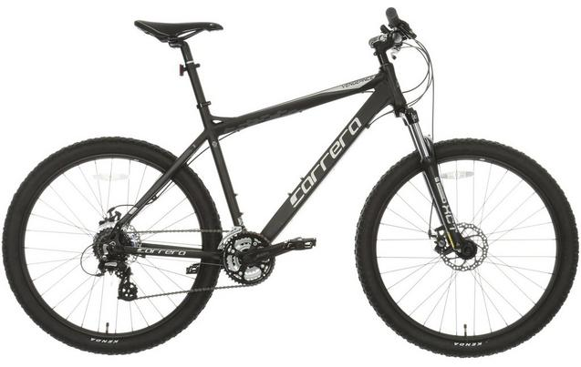

Carrera Vengeance Mens Mountain Bike - Black

The Carrera Vengeance Mens Mountain Bike is our best-selling mountain bike and for good reason -
its quality components are designed to make this the perfect ride. With its lightweight aluminium frame and
SR Suntour XCT-DS Forks you can be rest assured that any trails will be a smooth descent with bumps being no
issue, and with 24 Speed Shimano gearing you will climb up hills seemlessly. Its Tektro Aries Mechanical Disc
Brakes ensure you have reliable stopping power at all times, and with large 27.5" Kenda tyres the Vengeance is
the perfect all round mountain bike for hitting hills and trails.
Frame: Lightweight aluminium means easier handling on the toughest of trails.
Forks: Front suspension with 100mm travel and adjustable stiffness keeps you rolling over all terrains
Gears: 24 Speed Shimano gears provide smooth changing as you move from flat to hills
Brakes: Mechanical disc brakes give reliable braking whatever the weather
Wheels: Large 27.5" wheels with double wall rims are strong and reliable